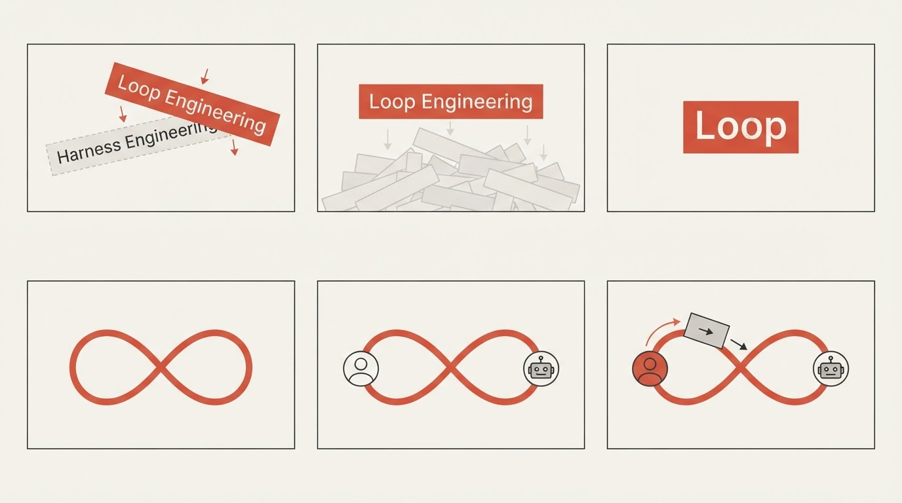
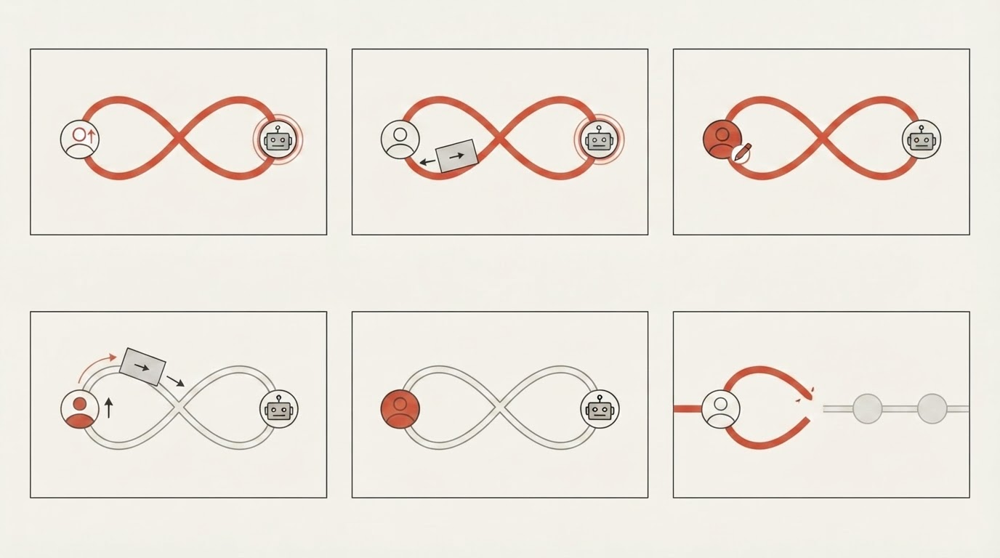

Loop Engineering 开头分镜
这份分镜使用新的 AI 六格图工作流：
旁白 / 节拍
->
六格分镜图
->
审稿
->
静态动态分镜
->
HTML/SVG 动作预演
->
正式 HyperFrames 动画
当前范围：只做开头样片，结尾到这句：
这就是 Loop Engineering 要打破的模式。
段落 01：开头 0:00-0:20

| 镜格 | 旁白 | 画面语义 |
|---|---|---|
| 01 | Harness Engineering 还没整明白呢，Loop Engineering 又火了。 | 新词压过旧词。 |
| 02 | 我们先把它叫作“循环工程”。 | 不新增画面事件。保持 Loop Engineering 红色标签定格，给观众半秒读懂；中文名只在旁白里说，不上屏。 |
| 03 | 这两年，AI 圈造词的速度，比模型更新还快。 | 大量术语标签快速堆在 Loop Engineering 背后。 |
| 04 | 那这一次，又在关注什么问题呢？ | 承接拍。术语噪音快速退淡，Loop Engineering 留在中心，准备从“词”变成“循环”。 |
| 05 | 别急，先看你现在怎么和 AI 协作。 | Loop 从文字变成一个干净的闭合循环，画面只保留“人”和“AI”两个角色。 |
| 06 | 你左手开着 Codex，右手开着 Claude Code。 | 旁白提到具体工具，但画面不画品牌：只用一个人面对一个 AI 节点，左右手各牵出一条输入线，表示多个会话压力汇到同一个人身上。 |
制作备注：不是每句旁白都配一个新动画。02、04 是停顿和承接拍，核心动画只落在 01 新词压旧词、03 术语噪音、05 Loop 变循环、06 引入人和 AI。第一格旧词略被裁切，最终需要 HTML 控制文字；05-06 不再画具体产品窗口，统一复刻成一个人、一个 AI、一个循环。
段落 02：旧循环断开 20:32-31:60

| 镜格 | 旁白 | 画面语义 |
|---|---|---|
| 07 | 你以为自己雇了一群 AI 员工。 | 同一个 AI 节点分裂出几个半透明分身，像“团队”错觉；不要出现多个品牌窗口。 |
| 08 | 实际上，被绑在电脑面前动弹不得的，是你。 | 几条线从 AI 分身回拉到人身上，形成“人被调度”的束缚感；画面核心仍是一个人和一个 AI 循环。 |
| 09 | 你一会儿给 Codex 派个新活。 | 人把第一张提示词卡片推向 AI，卡片沿循环上半段前进。 |
| 10 | 一会儿又要给 Claude Code 下一步指示。 | 结果卡片回到人，人又把第二张提示词卡片推回 AI，表现“一轮接一轮”而不是两个具体工具。 |
| 11 | 它们每跑完一轮，都要等你写下一轮的提示词。 | 循环在人的位置暂停，AI 端等待；提示词卡片只有在人再次推动后才继续转动。 |
| 12 | 所以问题不是没有“循环”。问题是：人被困在了循环里。 | 闭合循环收紧成围住人的环，AI 在环外或右侧等待；重点是“人被困在循环里”。 |
制作备注：第 7 格人类节点有多余符号，复刻时删除；08-12 统一为一个人、一个 AI、一个循环，不再画具体工具窗口；12 很适合作为进入 Boris / Peter / Addy 的转场。
当前决定
使用这两张 Lite v02 六格分镜图，作为新版开头分镜的视觉参考。
AI 图不直接作为最终动画画面。静态动态分镜阶段，可以裁切这些格子，或重生成单帧 PNG。到了动作预演和正式动画阶段，再把通过审稿的画面复刻成 HTML/CSS/SVG。
待解决问题
- 即使禁止，AI 仍然可能加角标或镜格编号。
- 主要英文文字可能变成全大写，或被轻微改写。
- 需要精确文字的镜头，最终必须由 HTML 控制，不能信任生图模型。
- Lite 速度足够快，后续优先多生成几个变体，而不是花一分钟等 Pro。
- 第一格旧词略被裁切，第七格人类节点有多余符号，复刻时需要手动修正。
- 下一步不继续追求生图完美，而是把通过审稿的结构复刻成可控 HTML/SVG。